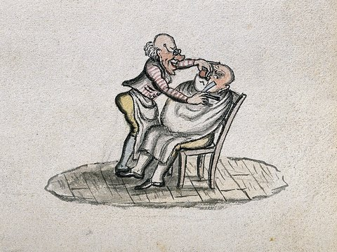
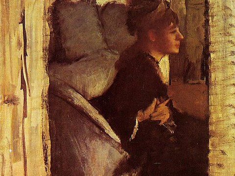
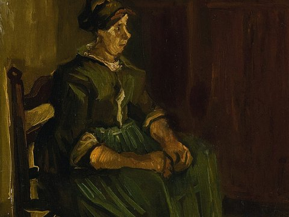
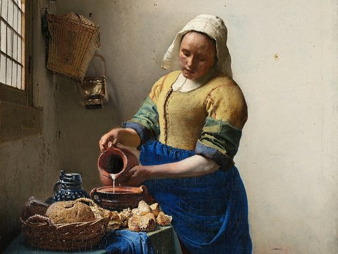
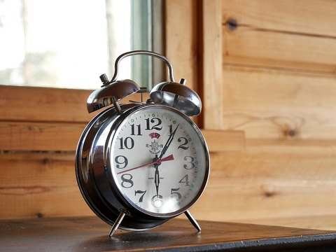
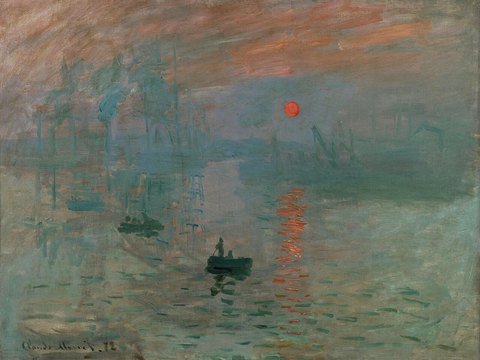
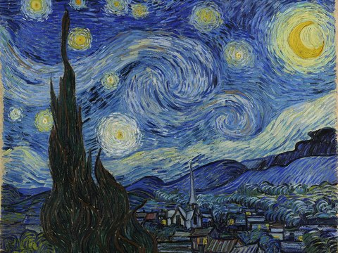

Optima Academy OnlineAn Education Experience Company
Optima Academy OnlineAn Education Experience CompanySpanish 1 ❖ Módulo 4 · La rutina diaria
Vocabulario · Módulo 4
Vocabulario · Módulo 4
Study cards · tap a card to flip, tap 🔊 to hear it
El cuadro del módulo: Diego Velázquez, Las hilanderas (The Spinners), about 1657
Quarter / ModuleQ3 · Módulo 4La rutina diaria
Study companionVocabulario · Repaso
Topic18 palabras · por el oído
Module ThemeDaily Routine
HOW TO USE THIS PAGE
These are the 18 words of Módulo 4 — the same words you'll meet on the listening-based Vocabulary Check (Day 6). Each card shows the Spanish; tap the card to flip it and check the English. But your real goal is to know these by ear: tap the 🔊 button and say each word back out loud before you flip. If you can hear the word and picture its meaning without reading, you're ready.
Tip: the verbs all end in -se because the action comes back to you. When you actually use one, drop the -se and put a pronoun in front: levantarse → me levanto. Four of them jump a vowel: me despierto, me acuesto, me siento, me visto.
SECCIÓN A · VERBOS REFLEXIVOS actions you do to yourself
Verbos reflexivos — your daily actions
Say each verb, then say it with the yo pronoun: me levanto, me ducho…
despertarsetap to flip
to wake up
(me despierto)Joseph Ducreux, Self-Portrait, Yawning, about 1783tap to flip back
(me despierto)Joseph Ducreux, Self-Portrait, Yawning, about 1783tap to flip back
levantarsetap to flip
 to get upCarl Larsson, Christmas Morning, 1894tap to flip back
to get upCarl Larsson, Christmas Morning, 1894tap to flip backducharsetap to flip
to showerDO'Neil, A turned on shower, photograph (CC BY-SA 3.0)tap to flip back
lavarsetap to flip
 to wash (oneself)Mary Cassatt, The Child’s Bath, 1893tap to flip back
to wash (oneself)Mary Cassatt, The Child’s Bath, 1893tap to flip backcepillarsetap to flip
 to brush
to brush(teeth / hair)Jonas Bergsten, Toothbrushes, photograph, 2005tap to flip back
peinarsetap to flip
 to comb / do one's hairEdgar Degas, Combing the Hair (La Coiffure), about 1896tap to flip back
to comb / do one's hairEdgar Degas, Combing the Hair (La Coiffure), about 1896tap to flip backafeitarsetap to flip

to shaveA barber shaving a man, watercolor, Wellcome Collection (CC BY 4.0)tap to flip backvestirsetap to flip
 to get dressed
to get dressed(me visto)Cornelis van den Gaal, Girl Getting Dressed, 1826tap to flip back
ponersetap to flip

to put on (clothing)Edgar Degas, Woman Putting on Her Gloves, about 1877tap to flip backsentarsetap to flip

to sit down(me siento)Vincent van Gogh, Peasant Woman, Seated, 1885tap to flip back
acostarsetap to flip
 to go to bed
to go to bed(me acuesto)Vincent van Gogh, The Bedroom, 1888tap to flip back
SECCIÓN B · LA RUTINA Y LA SECUENCIA routine & order
La rutina y la secuencia — ordering the day
The sequence words (primero, antes, después) are the glue that turns actions into a story of your day.
la rutinatap to flip

the routineJohannes Vermeer, The Milkmaid, about 1660tap to flip backel despertadortap to flip

the alarm clockSanteri Viinamäki, Classic alarm clock, photograph, 2018 (CC BY-SA 4.0)tap to flip backtempranotap to flip

earlyClaude Monet, Impression, Sunrise, 1872tap to flip backtardetap to flip

lateVincent van Gogh, The Starry Night, 1889tap to flip backprimerotap to flip
firsttap to flip back
antestap to flip
beforetap to flip back
despuéstap to flip
after / afterwardtap to flip back
⭐ PARA IR MÁS LEJOS · optional
Cover the English. Play the 🔊 on ten cards in random order and say each meaning out loud before you flip — that's exactly what the listening Vocabulary Check asks. Then narrate your morning in three steps: Primero me levanto, después me ducho, y por último me visto.
Las pinturas · The paintings on the cards
Each card shows its word in a painting. Flip a card, look at the picture, and say the word again: a word tied to a picture is easier to remember.
- Joseph Ducreux, Self-Portrait, Yawning, about 1783
- Carl Larsson, Christmas Morning, 1894
- DO'Neil, A turned on shower, photograph (CC BY-SA 3.0)
- Mary Cassatt, The Child’s Bath, 1893
- Jonas Bergsten, Toothbrushes, photograph, 2005
- Edgar Degas, Combing the Hair (La Coiffure), about 1896
- A barber shaving a man, watercolor, Wellcome Collection (CC BY 4.0)
- Cornelis van den Gaal, Girl Getting Dressed, 1826
- Edgar Degas, Woman Putting on Her Gloves, about 1877
- Vincent van Gogh, Peasant Woman, Seated, 1885
- Vincent van Gogh, The Bedroom, 1888
- Johannes Vermeer, The Milkmaid, about 1660
- Santeri Viinamäki, Classic alarm clock, photograph, 2018 (CC BY-SA 4.0)
- Claude Monet, Impression, Sunrise, 1872
- Vincent van Gogh, The Starry Night, 1889
All public domain, via Wikimedia Commons, except where a credit names a photo licence (CC BY-SA).
✅ BEFORE YOU LEAVE
Click “Mark as Done” on this page in Canvas so your progress is recorded. Then, with the English covered, play five 🔊 buttons and say each meaning out loud before flipping — if you got them by ear, you're ready for the Vocabulary Check.

Optima Academy Online · SPANISH 1 🌎 · Quarter 3 · Student Study Page
Vocabulario · Módulo 4 · La rutina diaria
© Optima Academy Online · An Education Experience Company · Plaza de San Francisco, Sevilla, c. 1850 (all public domain)